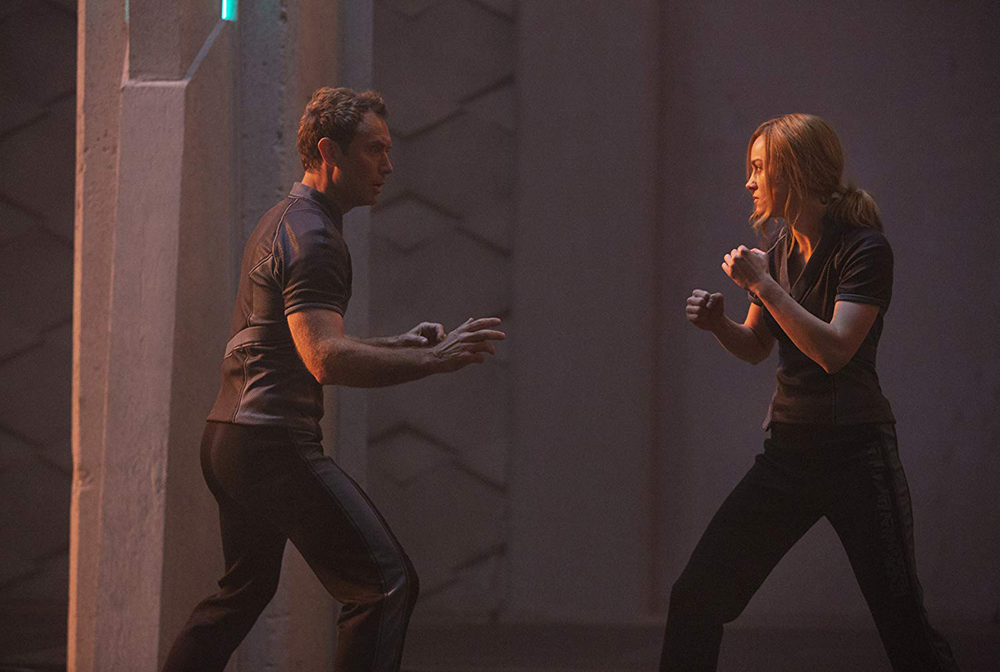
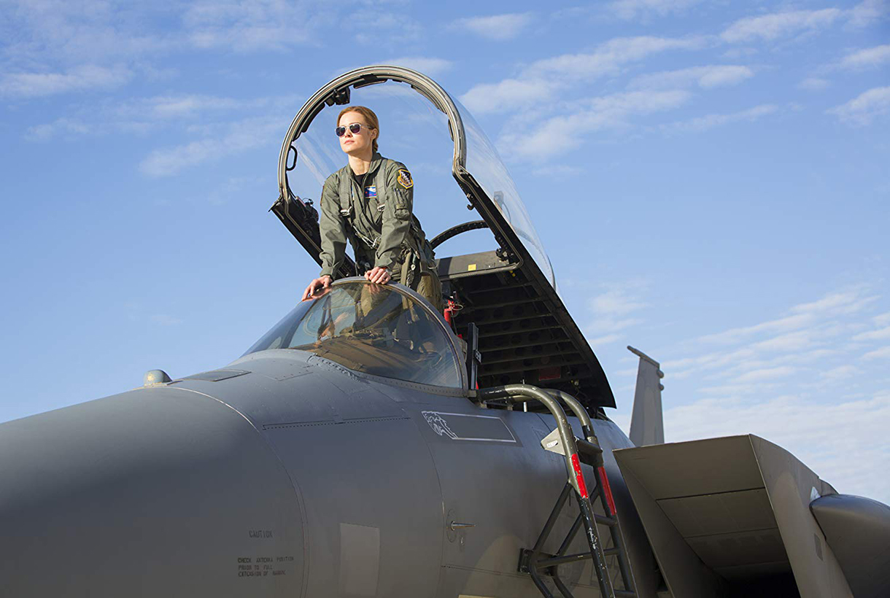
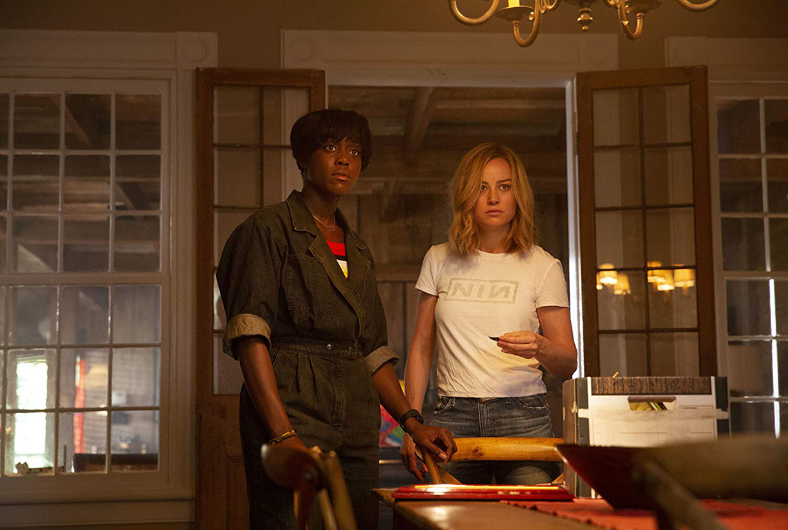
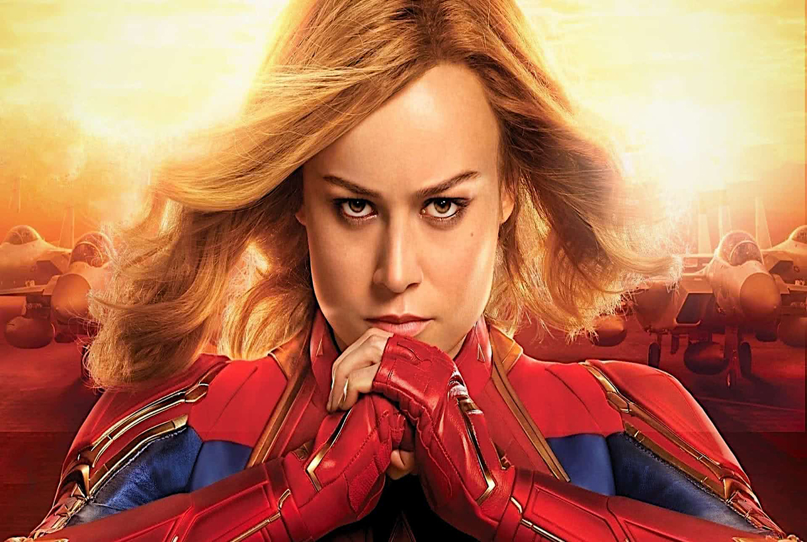
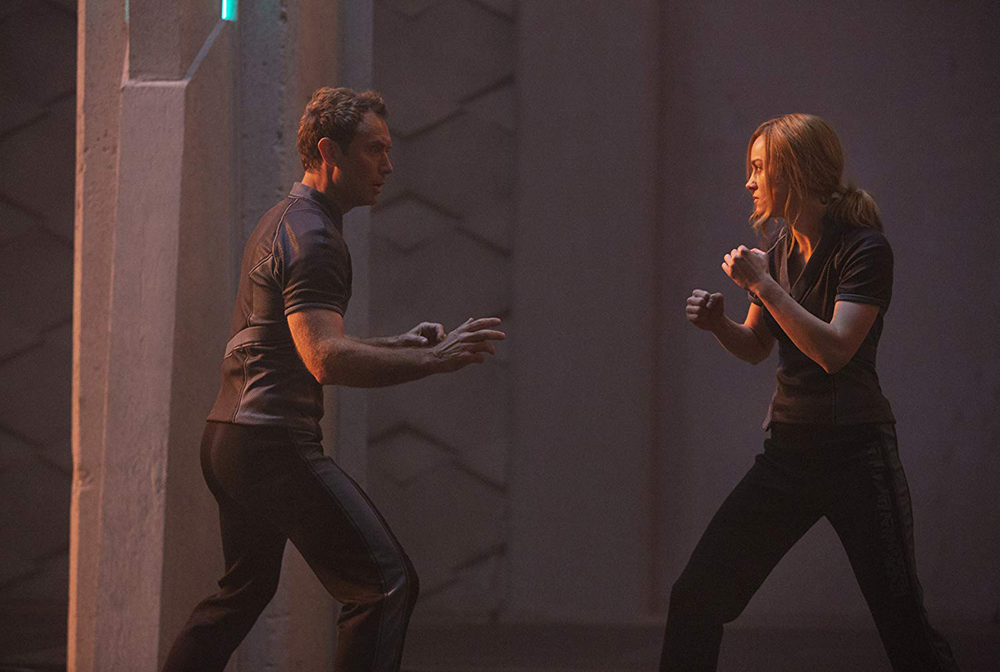
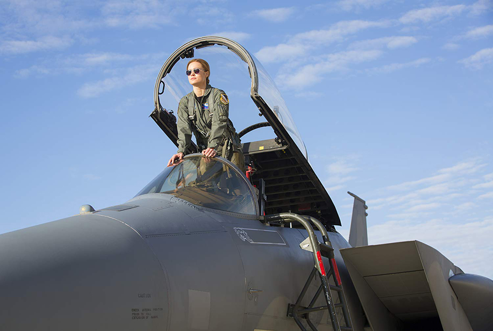
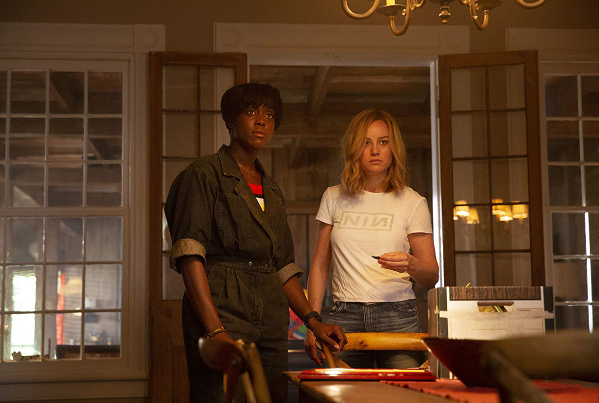
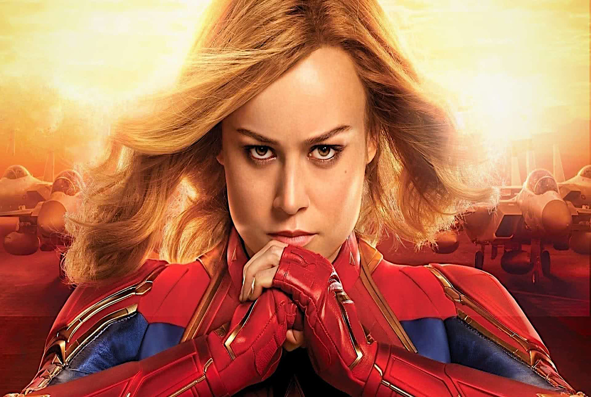

Sinopse / Crítica
Capitã Marvel
Nos anos 1990, Carol Danvers, uma agente da CIA, acaba estabelecendo contato com uma raça alienígena
e ganha poderes sobre-humanos. Entre as suas novas habilidades, estão uma força fora do comum e a
capacidade de voar. Descoberta por Nick Fury, ela agora precisa encontrar seu lugar num mundo que
está se transformando.
Suprindo parcialmente as expectativas que pairavam sobre o primeiro
filme
solo de uma das principais super-heroínas do Universo Marvel, os cineastas Anna Boden e Ryan Fleck
(Parceiros de Jogo, 2015) fazem um trabalho apenas razoável em Capitã Marvel, tornando-o uma boa
experiência, mas morna. A direção não valoriza tanto os instantes de emoção e, além disso, pesa a
falta de sustância da atriz principal, Brie Larson, pois ela demora a encontrar os tons da
protagonista. Diante de uma história de origem, somos convidados a conhecer o que levou a militar
Carol Denvers a se tornar uma valorosa guerreira da raça Kree. O mais inteligente do roteiro é
estabelecer tal percurso de maneira fragmentada, sem separar um bloco especificamente para isso.
Descobrimos a verdade, assim, junto com a personagem, por meio de flashes do passado ignorado em sua
completude. Os inimigos Skrull extraem os lampejos do outrora numa tentativa de apropriação da
tecnologia seminal para seus planos insuspeitos. Até aí tudo bem, mesmo a narrativa progredindo
burocraticamente, demorando a engrenar.
Capitã Marvel se passa nos anos 90. Todavia, a
conjuntura
noventista fica tão e somente a cargo da ótima trilha sonora repleta de hits facilmente
identificáveis. O rápido vislumbre da locadora Blockbuster também visa evocar a época em que o
acesso aos filmes era limitado às salas de cinema ou aos estabelecimentos de aluguel de VHS. Mas,
tais componentes são insuficientes para apresentar uma contextualização sólida. Em termos de
comparação, há mais “anos 80” em Guardiões da Galáxia (2014), cuja trama se passa quase
integralmente no espaço, do que neste longa-metragem ambientado majoritariamente no planeta C-53,
conhecido como Terra. A jornada gradativa de descoberta identitária de Carol é desenhada com um
misto de hesitação e curiosidade, do que decorre sua pouca espessura dramática. Um exemplo do
descuido diretivo é a forma como a "extraterrestre" se integra rapidamente à Terra, algo sequer
assinalado como indício de sua humanidade. As coisas melhoram bastante quando entra em cena o agente
Nick Fury (Samuel L. Jackson).
Aliás, as sacadas humorísticas efetivamente engraçadas derivam
quase totalmente da ginga desse personagem bem diferente do sisudo chefe da S.H.I.E.L.D. visto nas
demais produções do Universo Cinematográfico Marvel. Aqui ele é praticamente iniciante,
rejuvenescido por impressionantes processos digitais, alheio às ameaças alienígenas. Numa cena
específica, a da perseguição embaixo do trajeto ferroviário urbano, Anna Boden e Ryan Fleck ensaiam
uma homenagem aos exemplares policiais norte-americanos dos anos 70, especificamente a Operação
França (1971). Porém, a citação é tão frugal que não chega a reverberar de alguma forma. Brie
Larson, o componente mais frágil de Capitã Marvel, não dá conta da modulação emocional dessa mulher
que, aos poucos, acessa o passado para descobrir sua origem e seu propósito numa guerra de limites
turvos. Ela é eclipsada frequentemente pelos colegas Samuel L. Jackson e Ben Mendelsohn, o
intérprete de Talos, líder Skrull que revela a surpresa responsável por oferecer ao conjunto uma
ótima guinada.
Capitã Marvel faz uma curiosa e bem-vinda ponte com a realidade ao se debruçar
sobre o drama da raça
consecutivamente encurralada nos recantos universais. Pais são separados dos filhos – alô, alô
Donald Trump, essa foi para você – e as atenções se voltam ao necessário reparo de injustiças. Anna
Boden e Ryan Fleck proporcionam à protagonista, ao menos, dois belos momentos de intensidade,
exceções que, infelizmente, aqui confirmam a regra. O primeiro, a montagem com as diversas Carols se
erguendo diante de prováveis derrotas; o segundo, a libertação de uma entidade que se vale do
inconsciente para projetar figuras de respeito. É pouco, especialmente quando há um acúmulo de
eventos tratados com boas doses de displicência. Entre os destaques positivos, figuram, ainda, o
gato Goose, que centraliza anedotas realmente efetivas, e as participações de Jude Law e Annette
Bening, ótimos apesar dos papeis pequenos. Pena que Brie Larson, embora não faça feio, demonstre-se
aquém da representatividade de Carol, custando a encontrar as suas essências humana e Kree.
Direção
Anna Boder, Ryan Fleck
Crítica Especializada
 alt="Icone de estrela"
alt="Icone de estrela"
Imagens Capitã Marvel
 






